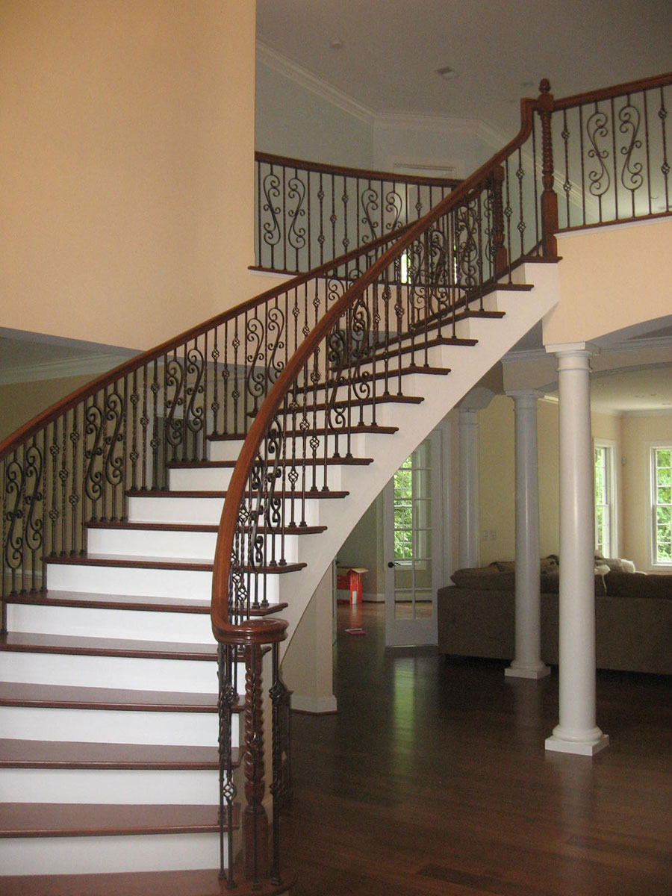

New railings for new construction:
 Before{kind=link}
{kind=link}
{kind=link}
{kind=link}
Serving the central
Maryland area

American Staircrafters is your go-to source for all your interior stair rail needs. We provide quality parts, use superior installation practices (which make for very strong railing systems), and are attentive to meeting all building code requirements. We are able to provide railings incorporating the latest in iron balusters, cable rails, and traditional designs. A well designed and installed stair rail is not only safe, but something you will derive pleasure from every day in its visual appearance and with the feel of your hand as it glides along the smooth, wood rail. We will take the project start to finish, including staining and finishing the rail as well as any required painting.
Just about anything you need we can do. Here are a few things we currently do:
- New rails for new construction
- Remove old rails and replace with new
- Remove wood balusters and replace with iron
- Remove iron railing and replace with wood rail
- Complete staining and finishing of railings
- Remove walls to open up a staircase
- Install cable rail